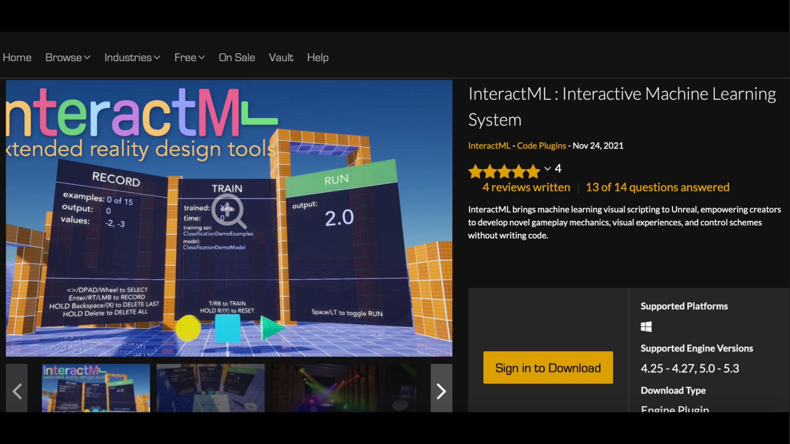
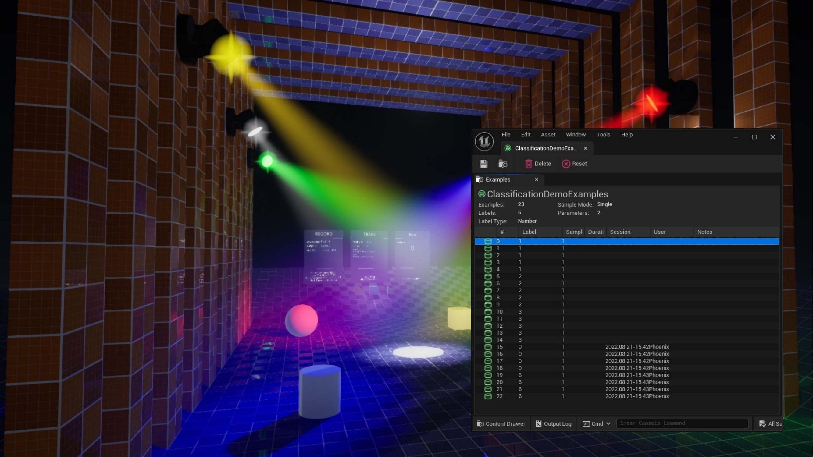
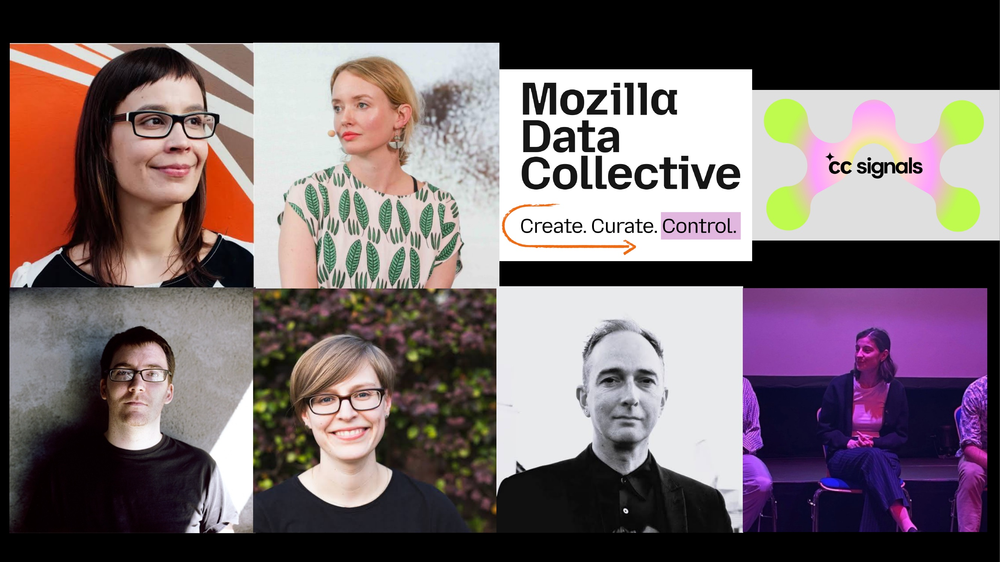

A 5-minute intro
Dr. Phoenix Perry · CCI, University of the Arts London
@phoenixperry · phoenix@phoenixperry.com
They create the myths that imagine possible worlds.
This is a myth. Data always tells a story.
...from discussions around endless growth and big datasets — and what you are being asked to surrender to achieve it.

Visual scripting ML for Unreal.

Classification driving real-time lighting.
Enabling the accumulation and transmission of cultural information across generations.
A ResponsibleAI project, developed with Braid.

Mozilla Data Collective — Create. Curate. Control.
Empowering creators with greater control while reducing environmental impact.
Addressing concerns about large AI models trained on poorly curated datasets without creator permission.
Empowering artists to structure and share creative data while maintaining control within their creative communities.
Website prototype establishing community-managed protocols and resources.
US / Canadian "Doing AI Differently" project.
This directly addresses the dominant attractor problem in generative AI.
Supporting Dr. Johnny Golding to integrate their research with AI.
Questions? Collaborations?
Dr. Phoenix Perry
@phoenixperry
phoenix@phoenixperry.com